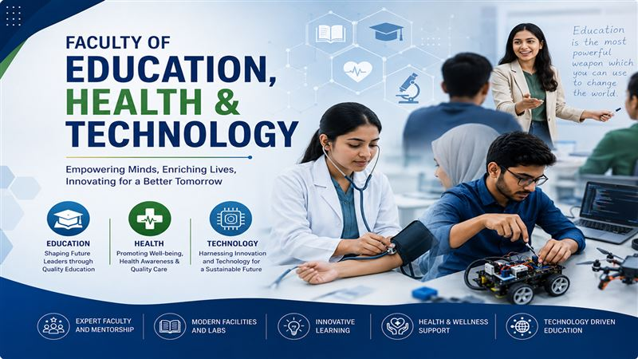
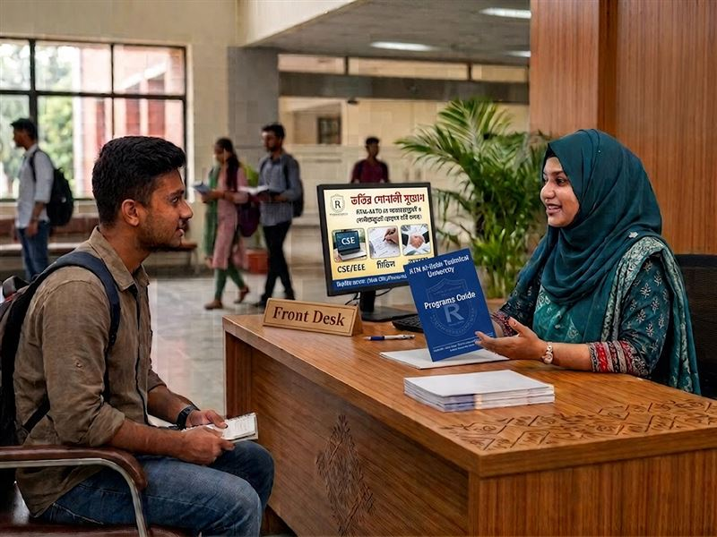
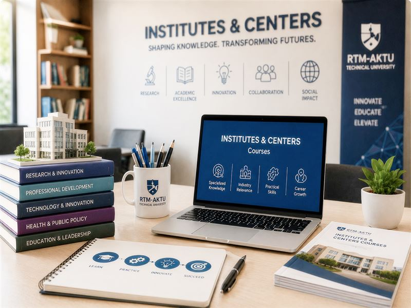
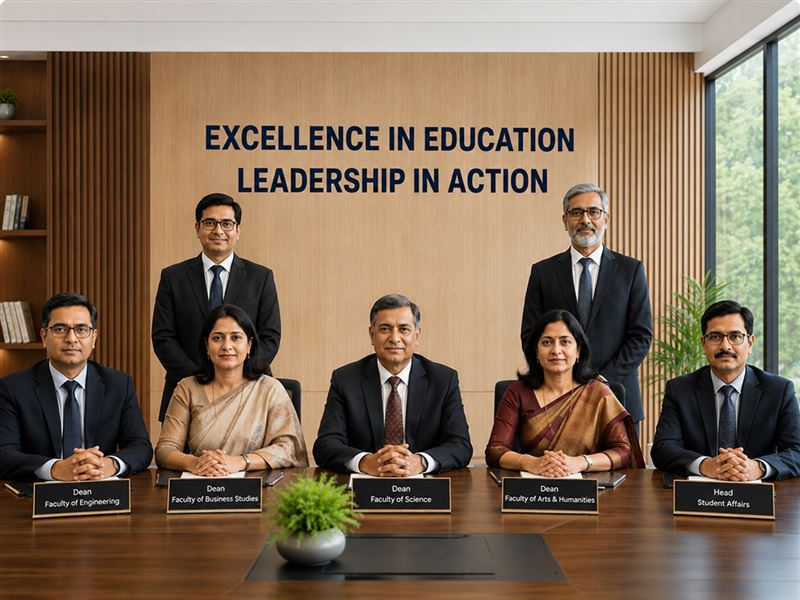
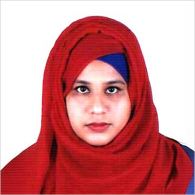

Academics
 Education & Innovation
Education & Innovation
Academic System
RTM Al-Kabir Technical University follows a competency-based technical education model that blends structured classroom instruction with applied lab work, studio practice, and field placements. Each program is mapped to clear learning outcomes so that students progress through foundation, core, and specialisation courses with steadily increasing hands-on responsibility.
Beyond the classroom, our academic system is anchored in community engagement through the Virtual Community Partnership Program (VCPP), which connects coursework to real projects with local industry, government, and non-profit partners. This structure ensures graduates leave with both the technical depth and the collaborative experience employers expect.
View DetailsScholarship Programs
We offer merit-based and need-based financial aid to support academic excellence and ensure every talented student has access to quality technical education.
 Areas of Study
Areas of Study
Our Faculties
RTM Al-Kabir Technical University is committed to academic excellence through its three distinguished faculties: the Faculty of Science and Engineering, the Faculty of Business and Development Studies, and the Faculty of Education, Health & Technology. These faculties offer innovative, industry-oriented, and research-driven programs designed to develop skilled professionals and responsible leaders for national and global advancement.

 Focused Your Path
Focused Your Path
Featured Programs
Our programs span engineering, business, public health, and education, each built with an industry-informed curriculum and delivered by faculty who bring both academic depth and practical experience. From foundation courses to advanced specialisations, students build a pathway suited to their career goals.
Know MorePostgraduate Programs
RTM-AKTU's postgraduate programs are designed for working professionals and recent graduates seeking advanced specialisation. Delivered through a mix of seminars, research supervision, and applied projects, these programs deepen expertise across engineering, business, and education disciplines while building research and leadership capacity.
Know MoreUndergraduate Programs
Our four-year undergraduate degrees combine a strong foundation year with progressively specialised coursework, studio and lab work, and a required internship or capstone project. Small class sizes and mentorship from experienced faculty help students build both technical competence and professional confidence.
Know MoreInstitutes & Centers Courses
Alongside degree programs, RTM-AKTU runs short courses and certifications through affiliated institutes and centers, including the Bangladesh Institute of Skill Development (BISD) and the Center of Research Training and Management (CRTM). These offerings give students and working professionals flexible, industry-aligned skill-building outside the standard degree track.
Know More

 Leading with Excellence
Leading with Excellence
Deans & Heads
Each faculty and department is guided by an experienced dean or head who oversees curriculum quality, faculty development, and student support. Their leadership keeps academic standards consistent while allowing each department to respond to the specific needs of its field.
View Details Distinguished Faculty
Distinguished Faculty
Faculty Members
At RTM Al-Kabir Technical University, our faculty members are the cornerstone of academic excellence. Combining scholarly expertise with real-world experience, they foster innovation, critical thinking, and lifelong learning through engaging teaching, impactful research, and dedicated mentorship. Their commitment ensures that every student receives a quality education and the guidance needed to become a confident, skilled, and globally competitive professional.
Md. Samiul Alim
Lecturer
Department of CSE
Ananda Chakraborty
Faculty Member
Department of CSE
S.A.M. Thahmid
Faculty Member
Department of Education

Jerin Akter
Lecturer
Department of Business Administration
Faculty Member 5
Faculty Member
Department Name
Faculty Member 6
Faculty Member
Department Name
 Institutional Guidelines
Institutional Guidelines
Academic Policy
RTM-AKTU's academic policy is built around a commitment to quality education, with an industry-focused curriculum reviewed regularly against sector needs. Every program includes structured workplace internships and hands-on training components, ensuring students graduate with practical competence alongside academic knowledge.
View Details